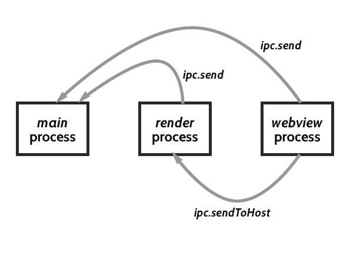

Saturday, 14 May 2016 at 11:21 AM
Weekly Log #7
UserTesting
Trello client
We made more bug fixes to the client, such as moving the settings page out of localStorage, which was shared with the Trello site itself and ran the risk of being overwritten.
Also, I finally figured out how Electron’s inter-process communication (IPC) system worked. It’s their system of transferring data between the main, render and (in our case) web view processes. It is capable of working both synchronously and asynchronously.

How the IPC system works.
The send calls can be replaced with sendSync, where the calls will execute synchronously. This is where I encountered strange behaviour - returning null on a synchronous call will crash the application
on launch.
With the IPC system, the settings page, present in each window, runs in render processes, and any setting change is sent to the main process. The main process then saves the change and sends an update command to each window, which in turns tell each web view to re-run their inject scripts.
Slack integration
After looking through the old Hubot-based bot in the company and at the current version of Hubot’s documentation, I decided to port over the existing work to use Hubot instead. It would have been much more maintainable as compared to my custom solution that clobbered Node.js, Express, and a Slack API package together.
Hubot works as a generic bot system. It is able to respond to incoming messages, web requests, and send messages out. Its adapter system allows a Hubot to technically be able to work with any chat platform that has a Hubot adapter - examples are Slack and HipChat. In practice, though, each chat platform has different message formats and capabilities, which make it difficult to write a Hubot to be cross-platform.
The framework in effect is not too different from my custom solution - it runs on Node, and uses the Express web framework too. It itself and most Hubot scripts are written in CoffeeScript, a language that compiles into Javascript. Fortunately, you can still write them in normal Javascript. In fact, if you use a relatively recent version of Node, you can write them in ES6 without Babel.
module.exports = (robot) => {
robot.hear(/badger/i, (res) => {
// code here
});
robot.respond(/open the pod bay doors/i, (res) => {
// code here
});
};
Hubot scripts can also access environment variables, making it easy to use sensitive credentials in the app.
The main great part of Hubot is that many people are using it. What this means is that many of their scripts can be re-used in your own Hubot. This is done using Hubot’s built-in external-scripts functionality and the npm package manager. For example, here are the steps to install a quote script:
npminstall the packagenpm install hubot-space-bot- Append
hubot-space-botto the JSON array atexternal-scripts.json
Your Hubot is now capable of giving space quotes!
GitHub’s documentation is really comprehensive and easy to understand. The switch to Hubot makes the code much easier to maintain for anyone else than myself 😁
Saturday
Went out for lunch with the interns and Harry. I had a Japanese bento:
Beef Teriyaki, Tempura (assorted) and Salmon sashimi. Pretty decent 🍽
In the late afternoon, we had a barbecue party for intern graduates (from 1LightMedia I think).
Sunday
Tried out Uber’s new UberEATS service. Ordered from a Shanghai eatery about a 10 minute drive away.
Beef Fried Rice and Steamed Pork dumplings
The food arrived in about half an hour, and the delivery fee was $5 (got a discount of the same amount due to UberEAT’s introductory promotion).
In the afternoon, I went to watch the new Captain America movie.